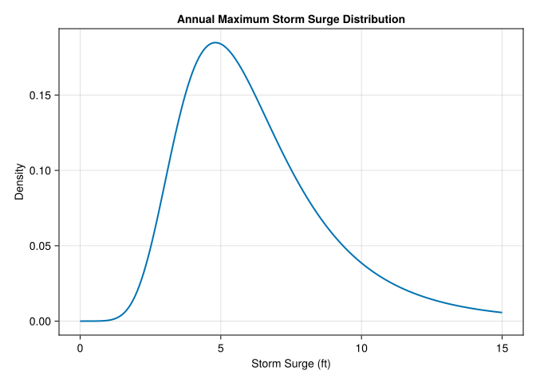
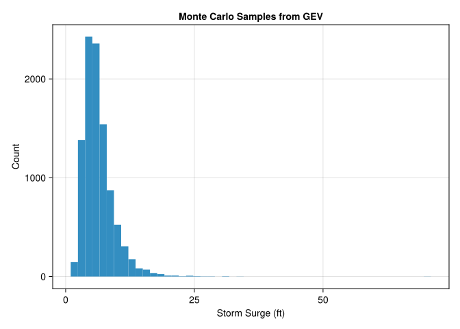
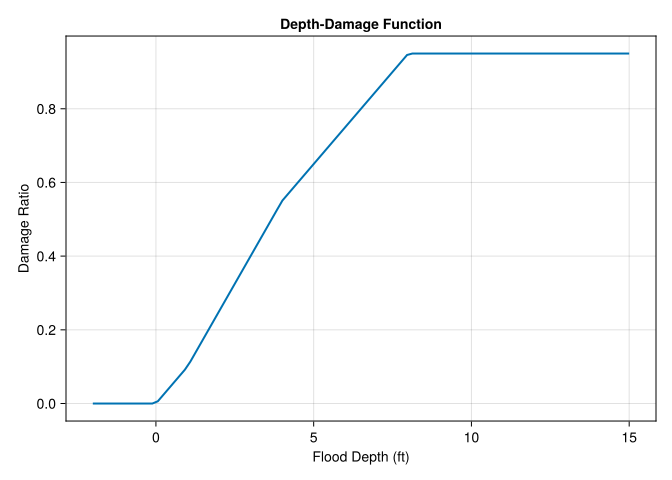
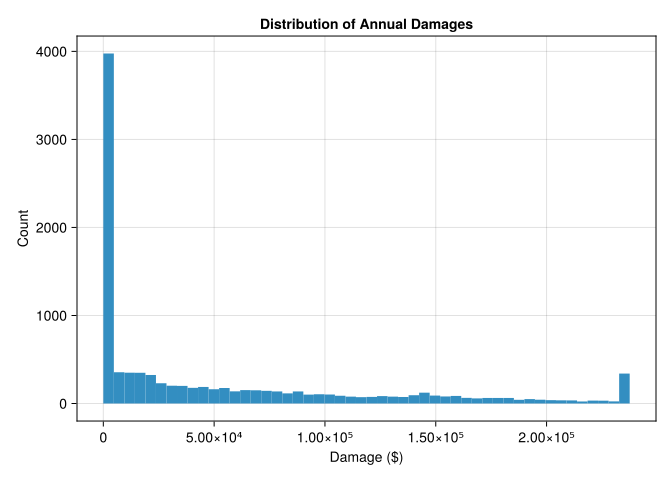
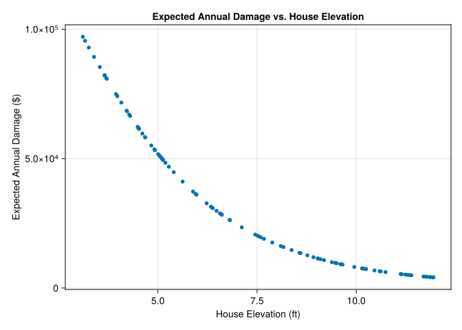
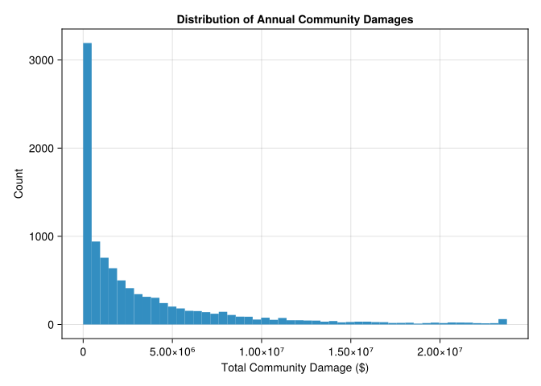

if !isfile("Manifest.toml")
using Pkg
Pkg.instantiate()
endLab 2: Intro to iCOW
CEVE 421/521
Draft Material
This content is under development and subject to change.
1 Overview
In this lab, you will learn to quantify flood risk by connecting hazard models to damage functions. This is a core skill in climate risk analysis: translating uncertain physical events into uncertain economic outcomes.
Learning Objectives:
- Understand the GEV distribution for modeling extreme events
- Use Monte Carlo sampling for uncertainty quantification
- Apply a depth-damage function to compute flood losses
- Use for loops to extend analysis to multiple houses
- Calculate community-level risk metrics
2 Setup
Julia uses packages to make code reusable and modular. This block will install all required packages for you – the first time you run the code, it may be slow while everything is installed and compiled. From there, it should be quick.
Here, we tell the notebook which packages we will be using.
using CairoMakie
using Distributions
using Statistics3 Exercise 1: The GEV Distribution for Flood Hazard
Imagine a coastal town called ImaginaryLand. We want to model the annual maximum storm surge – the highest water level observed each year.
The Generalized Extreme Value (GEV) distribution is the theoretically appropriate model for annual maxima. It has three parameters:
- Location (μ): The “center” of the distribution, roughly the typical annual maximum
- Scale (σ): How spread out the distribution is (must be positive)
- Shape (ξ): Controls the tail behavior; positive = heavier tail, negative = bounded tail
For ImaginaryLand, let’s assume storm surge follows a GEV distribution with:
- μ = 5 ft (typical annual max surge)
- σ = 2 ft (moderate variability)
- ξ = 0.1 (slightly heavy tail – extreme events are possible)
# Define the storm surge distribution for ImaginaryLand
μ = 5.0 # location (ft)
σ = 2.0 # scale (ft)
ξ = 0.1 # shape (dimensionless)
surge_dist = GeneralizedExtremeValue(μ, σ, ξ)Let’s visualize this distribution:
let
x_range = range(0, 15; length=200)
fig = Figure()
ax = Axis(
fig[1, 1];
xlabel="Storm Surge (ft)",
ylabel="Density",
title="Annual Maximum Storm Surge Distribution"
)
lines!(ax, x_range, pdf.(surge_dist, x_range); linewidth=2)
fig
end
4 Exercise 2: Monte Carlo Sampling
Now we’ll use Monte Carlo sampling to generate many possible flood scenarios. Each sample represents one possible year’s worth of flooding.
The following code draws 10,000 samples from the GEV distribution and plots a histogram.
n_samples = 10_000
hazard_samples = rand(surge_dist, n_samples)
let
fig = Figure()
ax = Axis(
fig[1, 1];
xlabel="Storm Surge (ft)",
ylabel="Count",
title="Monte Carlo Samples from GEV"
)
hist!(ax, hazard_samples; bins=50)
fig
end
5 Exercise 3: Define a Depth-Damage Function
A depth-damage function translates flood depth into damage as a fraction of the building value. This is a simplified HAZUS-style function for residential structures.
"""
depth_damage(depth::Real)
HAZUS-style depth-damage function for a residential structure.
Returns damage as a fraction of structure value (0 to 1).
# Arguments
- `depth`: Flood depth above first floor (ft). Negative means no flooding.
"""
function depth_damage(depth::Real)
if depth <= 0
return 0.0
elseif depth <= 1
return 0.10 * depth
elseif depth <= 4
return 0.10 + 0.15 * (depth - 1)
elseif depth <= 8
return 0.55 + 0.10 * (depth - 4)
else
return min(0.95, 0.95) # Cap at 95%
end
endThe following code plots the depth-damage function for depths from -2 to 15 feet.
let
depths = range(-2, 15; length=100)
damages = depth_damage.(depths)
fig = Figure()
ax = Axis(
fig[1, 1];
xlabel="Flood Depth (ft)",
ylabel="Damage Ratio",
title="Depth-Damage Function"
)
lines!(ax, depths, damages; linewidth=2)
fig
end
6 Exercise 4: Compute Damage Distribution for One House
Now we’ll combine the hazard (storm surge) with the vulnerability (depth-damage function) to compute the distribution of damages for a single house.
Important: The flood depth at a house is the surge minus the house’s first floor elevation.
# House parameters
house_value = 250_000 # dollars
house_elevation = 5.0 # feet above sea level (first floor elevation)The following code computes the damage to this house for each hazard sample.
# Calculate flood depth at house for each sample
flood_depths = hazard_samples .- house_elevation
# Apply depth-damage function to get damage ratios
damage_ratios = depth_damage.(flood_depths)
# Convert to dollar damages
damages = damage_ratios .* house_value
# Visualize the damage distribution
let
fig = Figure()
ax = Axis(
fig[1, 1];
xlabel="Damage (\$)",
ylabel="Count",
title="Distribution of Annual Damages"
)
hist!(ax, damages; bins=50)
fig
end
Run the code below to answer these questions:
- What is the mean annual damage (expected annual damage, EAD)?
- What is the probability of any damage occurring?
- What is the probability of damage exceeding $50,000?
mean_damage = mean(damages)
prob_any_damage = mean(damages .> 0)
prob_severe = mean(damages .> 50_000)
println("Mean annual damage: \$$(round(mean_damage; digits=2))")
println("Probability of any damage: $(round(prob_any_damage * 100; digits=1))%")
println("Probability of damage > \$50k: $(round(prob_severe * 100; digits=1))%")Mean annual damage: $51900.74
Probability of any damage: 63.4%
Probability of damage > $50k: 35.6%7 Exercise 5: Extend to 100 Houses with Varying Exposures
Now let’s consider a community of 100 houses at different elevations. We’ll model this as a “city on a wedge” where houses are distributed at various heights above sea level.
# 100 houses at different elevations
n_houses = 100
# Heights above sea level follow a Uniform distribution
height_min = 3.0 # feet
height_max = 12.0 # feet
house_elevations = rand(Uniform(height_min, height_max), n_houses)
# All houses have the same value for simplicity
house_values = fill(250_000, n_houses)The following code uses a for loop to compute the expected annual damage for each house, storing the results in a vector called expected_damages.
# Initialize storage for expected annual damages
expected_damages = zeros(n_houses)
# Loop over houses
for i in 1:n_houses
# Calculate flood depths for this house
depths_i = hazard_samples .- house_elevations[i]
# Calculate damage ratios
damage_ratios_i = depth_damage.(depths_i)
# Calculate dollar damages
damages_i = damage_ratios_i .* house_values[i]
# Store expected annual damage
expected_damages[i] = mean(damages_i)
endLet’s visualize the relationship between elevation and expected damage:
let
fig = Figure()
ax = Axis(
fig[1, 1];
xlabel="House Elevation (ft)",
ylabel="Expected Annual Damage (\$)",
title="Expected Annual Damage vs. House Elevation"
)
scatter!(ax, house_elevations, expected_damages; markersize=8)
fig
end
8 Exercise 6: Total Community Risk
The following code calculates the total expected annual damage across all 100 houses.
total_ead = sum(expected_damages)
println("Total community EAD: \$$(round(total_ead; digits=2))")Total community EAD: $3.36898534e6Now let’s visualize the distribution of total community damages. We need to calculate total damage for each Monte Carlo sample:
# Calculate total damage for each sample
total_damages = zeros(n_samples)
for j in 1:n_samples
sample_total = 0.0
for i in 1:n_houses
depth_ij = hazard_samples[j] - house_elevations[i]
damage_ij = depth_damage(depth_ij) * house_values[i]
sample_total += damage_ij
end
total_damages[j] = sample_total
end
let
fig = Figure()
ax = Axis(
fig[1, 1];
xlabel="Total Community Damage (\$)",
ylabel="Count",
title="Distribution of Annual Community Damages"
)
hist!(ax, total_damages; bins=50)
fig
end
9 Reflection Questions
Answer these questions in a few sentences each:
10 Summary
In this lab, you learned to:
- Work with the GEV distribution for extreme event modeling
- Use Monte Carlo sampling for uncertainty quantification
- Apply a depth-damage function to translate hazard into losses
- Use for loops to analyze many houses
- Calculate community-level risk metrics
These are the building blocks for the iCOW model and climate risk analysis more broadly.
11 Submission
- Push your completed notebook to GitHub
- If the formatter creates a pull request, approve it and re-render
- Submit the link to your repository on Canvas